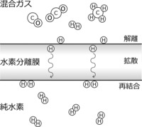
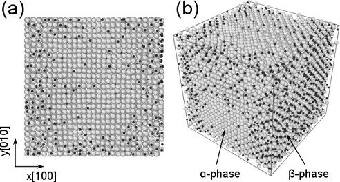
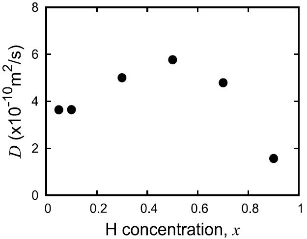
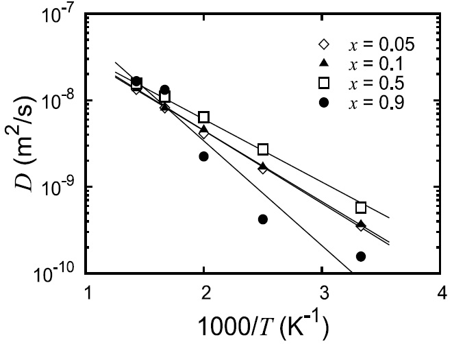

水素関連材料の研究
|
水素社会の実現を目指して、水素の製造、輸送、貯蔵、利用の各分野において、研究開発が活発に進められています。 本研究では水素の製造に用いられる水素分離膜に注目します。 水素分離膜の性能は膜中の水素拡散によって決められます。 水素分離膜中の水素拡散について調べるために、分子動力学法と呼ばれるシミュレーション手法を用います。 分子動力学法は原子1個1個について運動方程式を解いて、その運動を追跡します。 得られた原子運動のデータを統計処理すると、材料中の水素の拡散係数を求めることができます。 本研究では水素分離膜用の材料としてパラジウムを取り上げます。 パラジウム膜は水素透過性、分離選択性が高く、すでに一部の用途では実用化されています。 水素分離以外にも、水素貯蔵、水素探知、燃料電池用触媒などへの応用も期待されています。 |
 |
|  | |
|  | |
|  |